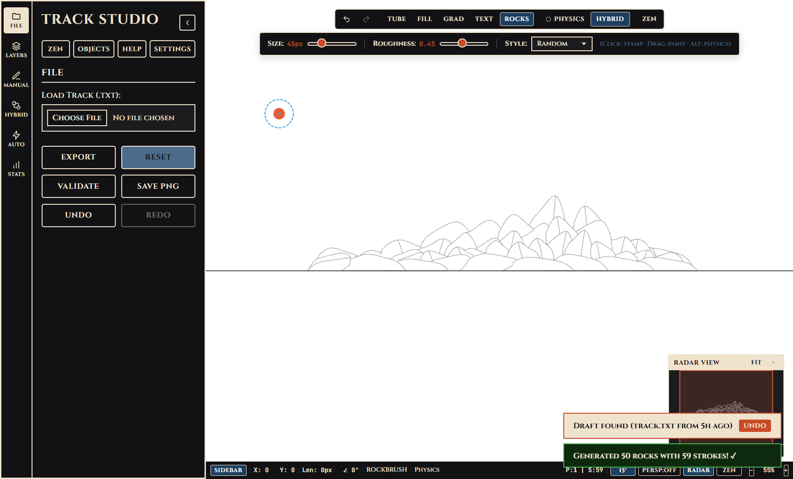
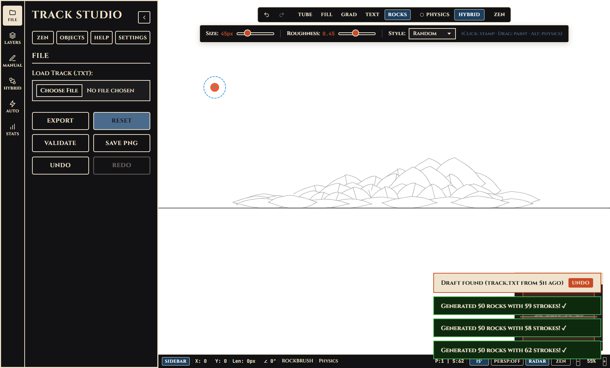
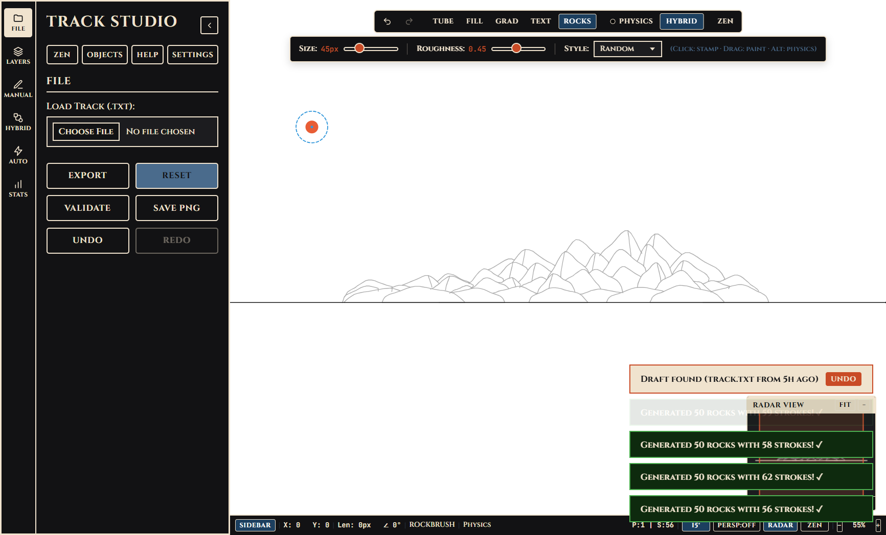

A modern, standalone desktop workstation. Draft buttery-smooth Bézier curves, generate organic curved rock massifs, weld invisible sub-pixel cracks, and sculpt multi-layer physics and scenery natively.

Equipped with specialized drafting tools, intelligent procedural synthesis, and line optimization.
Procedural rock cluster generator with 5 distinct curved, non-circular styles: Whaleback & Splines, Asymmetric Lamé Superellipses, Roche Moutonnée, Multi-Harmonic Polar Cam, and 3D Crease toggles.
Draft natural transitions and launching kickers with the 3-point quadratic curve tool. Real-time apex guide with configurable segment resolution (4 to 64 segments).
Ramer-Douglas-Peucker line simplifier to slash track filesize, plus an intelligent Gap Welder that seals sub-pixel cracks to prevent the bike from snagging.
Independent visibility and lock toggles for Physics and Scenery layers. Includes scenery opacity ghosting (10% to 100%) so you can draft rideable lines over background art.
Interactive viewport minimap in the corner—click or drag to jump anywhere in giant tracks instantly. Press \ for Zen mode to collapse all sidebars for pure drafting.
Persistent auto-save daemon that prevents lost progress. If your computer reboots or crashes, Track Studio immediately offers one-click draft recovery on launch.
Natural mountain contours with varying curvature, asymmetric whaleback ramps, and zero circular bubbles.
Glaciated stoss ramps curving smoothly into asymmetric crowns and eroded concave hollows. Features broad horizon bedrock platforms.

Mathematical power curves with flattened crowns and steep shear flanks. Forms monolithic rounded loaf crags and peaked massifs.

Long 20° sweeping inclines flowing over rounded crests and plunging down terraced lee benches, mimicking ancient glaciated granite.
| Key | Action | Description |
|---|---|---|
| Q | Line Tool | Basic drafting segment |
| W | Line+ Tool | Continuous polyline drafting |
| R | Curve Tool | 3-point quadratic Bézier ramp |
| E | Eraser | Segment & stroke deletion |
| L | Toggle Layer | Switch between Physics & Scenery |
| N | Minimap Toggle | Show / hide radar overview |
| \ | Zen Mode | Collapse sidebar to maximize drawing canvas |
| Ctrl + S | Quick Save | Export track directly to disk |
| Ctrl + Z | Undo | Multi-level undo history |